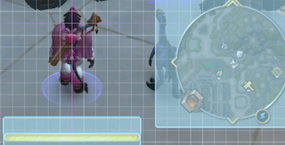
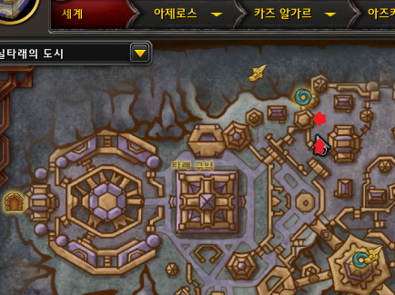

용군단과 비슷하다 본론으로 들어간다.(와우인벤 '닥치고냥냥님' 글 가져옴)
(경비병 클릭하면 위치를 알려준다)
경매장 카테고리에서 전문 기술 장비 > 채광 or 약초채집 누르고 검색하면 나온다.
낫과 곡괭이는 옵션을 선택할 수 있는데 반드시 능숙함 붙은 걸로 구매하자.
능숙함은 채집 캐스팅을 빠르게 해준다.
아이템 레벨 500 넘는 것들 중 형편에 맞게 싼 거 사면 된다.
300레벨짜리 템은 옛날 템이다. 사면 돈 날린다.
골드가 없다면 낫이랑 곡괭이만 사라 그냥 없이 시작해도 무관하다. 대장정퀘 하면서 캐다 보면 몇만 골 금방 모은다.
둘 다 필수템이다. 귀찮아도 진실한 시각의 약병은 꼭 마시자.
파란 줄 쳐 놓은 건 패스하자. 아직 너무 비싸다. 물론 곡괭이 마부는 골드가 넉넉하다면 바르면 좋다.

(혹시 마법책에 아직 과부하 스킬이 없을 수도 있다. 신경 쓰지 말고 채집 채광을 좀 하면서 기술 올리다 보면 생기는 경우도 있다. 그때 꺼내 놓는다.)
자 이제 준비는 되었다. 필드로 나가자. 미니맵에 온통 약초 광석뿐이다 안 가리고 다 캐준다.
전문 기술들마다 특성 3가지가 있다. 기술 25 / 50 / 75가 될 때마다 하나씩 개방할 수 있다.
25가 되면 식물학을 열어주고 얻은 지식으로 식물학을 쭉 40포 만땅까지 올려준다.
올리다 보면 식물학 밑에 하위 특성들을 개방할 수 있는데 놓치지 말고 열어준다.
열어만 주고 식물학만 올린다. 기술 50, 75를 찍으면 풍족한 수확과 지하 과부하도 개방해준다.
(드루이드거나 하늘 골렘 탈것이 있다면 풍족한 수확을 먼저 40포까지 올려도 괜찮다. 복잡하면 그냥 식물학부터 올리면 된다. 도긴개긴)
25까지 올리면 채광 기본을 열고 쭉 60포 만땅까지 올려준다.
이 다음은 잘 모르겠다. 뭘 찍어도 고만고만해 보인다. 힌트를 좀 주자면 20만골치를 채집했다고 치면 가격대 비율은 보통 이 정도라고 보면 된다.
> 진균꽃 5만골, 창연 5만골, 무상연꽃+불완전한 무위석 5만골, 나머지 모든 것들 5만골.
대략 이 정도이다. 요걸 실마리 삼아 이후 특성을 잘 찍기 바란다.
아무튼 지하 과부하, 신비의 지배자 이쪽 특성은 별로다. 최후순위다.
혹시 특성 잘못 찍었다고 낙담하지 마라. 뭘 먼저 찍어도 드라마틱한 차이는 없다. 채집은 많이 발견하고 빨리 캐는 게 기본적으로 장땡이다.
식물학 하위 특성 중 재배 특성을 살펴보면 여러 가지 씨앗을 채취할 수 있다고 나온다.
가장 기본 씨앗인 신록의 씨앗은 특성을 안 올려도 먹을 수 있다.
씨앗을 비옥한 토양에서 사용하면 약초가 나오는 방식이다. 이번 확팩은 비옥한 토양이 특정 지역에서만 나온다.
신성한 협곡-벨레다르의 은총 이 지역에서만 비옥한 토양을 볼 수 있다.
이쪽 주변 지역은 약초 광석도 풍부한 편이다. 재배 특성을 찍고 모아 놓은 씨앗을 잘 활용하면 괜찮을 수도 있겠다.
안 해봐서 추천은 못하겠다.
지식은 기본적으로 채집 채광을 하다 보면 자동으로 얻게 된다. 주마다 최대 수치가 정해져 있다. 얼마인진 모르겠다.
미니맵에 보물상자가 보이면 귀찮아도 열도록 한다. 펫 장난감만 주는 게 아니라 채집 채광 지식을 3씩 주는 경우가 있다. 전문 기술마다 8개씩 있다고 한다.
도르노갈 기술 전문가가 주는 주간퀘 완료 → 지식 +3.
도르노갈 주문제작 건물 안에서 퀘를 하면 장인의 명민함을 주는데 이걸로 장인무역연합 병참장교 라이렌달에게서 지식을 살 수 있다.
지식10 올려 주는 제일 싼 거 채집 채광 하나씩 사면 된다. 주문제작 퀘 보상이 짭짤하다. 이거 팔면 몇천골 된다. 못 산 장비를 사자.
아즈카헤트 실탈래의 도시 용품 상인에게 케즈565개로 지식10 구입 가능.
(채집 채광 용품 상인 둘 다 있다)

이건 용군단 때도 가능했고 지금도 된다. (약초만 가능! 광석은 안 된다)
채집할 때 쉬프트+클릭 → 룻창이 뜨면 룻을 하지 않고 옆이나 위로 한 칸 이동해 룻창을 캔슬 → (이러면 특성에 의해 활력은 한 칸 차고 약초는 그대로 남아있다)
→ 다시 쉬프트+채집 → 한 칸 이동 룻창 캔슬 반복.
이 부분은 정말 아쉽다. 희귀 재료들이 똥값이다. 캐다 보면 알게 될 것이다. 자세하게 설명할 필요도 없겠다.
미니맵에 반짝이는 약초 광석들에게 스킬을 쓸 수 있다. 먼저 캐고 나서 스킬을 써주자.
이쪽은 그냥 맘대로 해도 된다 나도 잘 모르겠다. 스킬 자체가 큰 효율은 없다.
희귀 재료가 똥값이라 재미는 없지만 정령 약초 광석 발견 시 쿨마다 써주자. 쿨은 12시간인데 채집 채광을 하다 보면 쿨이 줄어든다.
지난번 확장팩과 정반대로 희귀 재료들이 너무 싸기에 그냥 깡 약초 광석이 가장 돈이 된다.
10만골치를 캤다고 쳤을 때 한 4만골치 이상이 진균꽃과 창연이다. 가격은 싸지만 압도적으로 많이 캐게 된다.
채집 채광 중 낮은 확률로 나오는 무상연꽃과 불완전한 무위석이 그나마 돈이 좀 되지만 나올 확률에 비해서는 싼 편.
3성 약초 광석이 잘 안 나와 비싼 편이다. 그래서 숙련도(2성 3성 확률 증가)와 기교(발동하면 1.5배~2배 정도 더 캔다)가 중요해졌다. 인지력은 별로 효용성이 없어 보인다.
9월12일 신화 던전, 공격대 레이드가 열리면 수요가 많아질 테니 시세가 오를 것 같다.
딱히 핫스팟은 발견하지 못했다. 특정 약초가 많이 나오는 지역을 모르겠다. 이번 확팩은 어느 지역에서나 약초 광석이 골고루 있다.
(도른의 섬 남쪽 지역 동서로 왔다 갔다 하기. 평지라 캐기 편하다)
자기만의 핫스팟을 찾아 코스를 잘 짜 보기를 바란다. 채집 채광은 여기저기 중구난방 돌아다니는 것보다는 10~20분 정도 한 바퀴 코스를 정하고 반복해서 그곳만 도는 것이 효율적이다.
종류 가리지 않고 보이는 대로 캐준다.
우선순위가 있다면 무성한 약초, 풍부한 광석 → 유혹방울, 아라소르 창 → 정령 약초 광석 이 정도다.
아직 초반이라 지금은 모르는 더 좋은 방법이나 장소들이 있을 것이다. 찾아내서 효율적으로 캐길 바란다.
부캐를 채집으로 렙업해도 빠른 편이다.
채집 처음 해보는 사람도 80렙 대장정까지 다 끝내고 모은것들 경매장에 내다 팔면 십만골 이상은 모일 것이다.
이걸 종자돈 삼아 내부전쟁 잘 즐기길 바란다.
허접한 사진 몇개 첨부 하느라 글쓰는데 두시간이나 걸렸다. 지친다 도움이 되길 바란다 골드 많이 모아라 이만.
몇 번 수정을 했다 이젠 마지막이다 이만.
읽어주셔서 감사합니다. 도움이 되길 바랍니다.